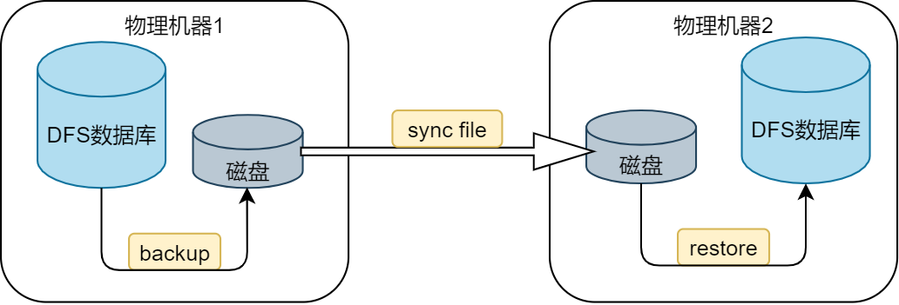
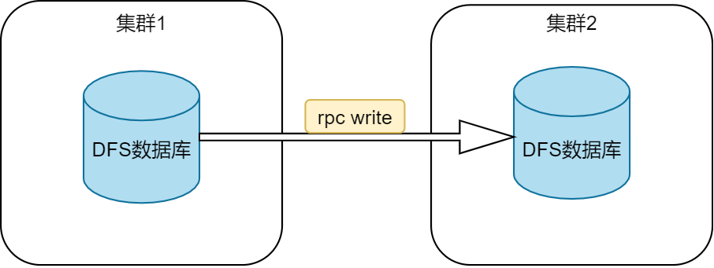

集群间数据库同步
DolphinDB 提供离线方式和在线方式实现不同集群间 DFS 数据库的同步：
- 离线方式：通过数据库备份和恢复功能实现数据同步；
- 在线方式：通过建立在线连接，从一个数据库中读取数据然后写入另一个数据库中。
1. 离线方式
使用离线方式同步集群间数据库的主要步骤如下：
- 使用
backup函数将数据库中的数据备份到系统磁盘； - 通过网络传输，将备份数据同步到远端磁盘；
- 使用
restore函数将备份数据恢复到另一个数据库中。

1.1. 数据备份
通过 backup 函数将需要同步的数据表备份到磁盘上，可使用 SQL 元代码指定需要同步的数据。示例如下：
示例1：备份数据库 db1 中表 mt 的所有数据。
backupDir = "/hdd/hdd1/backDir"
backup(backupDir,<select * from loadTable("dfs://db1","mt")>)示例2：备份数据库 db1 中表 mt 的最近7天的数据，假设时间分区字段是 “TradingDay”(DATE类型)。
backupDir = "/hdd/hdd1/backDir"
backup(backupDir,<select * from loadTable("dfs://db1","mt") where TradingDay > date(now()) - 7 and TradingDay <= date(now())>)示例3：备份数据库 db1中表 mt 的某些列 ("col1", "col2", "col3") 的数据。
backupDir = "/hdd/hdd1/backDir"
backup(backupDir,<select col1,col2,col3 from loadTable("dfs://db1","mt")>)更多相关语句请参考 DolphinDB 元编程教程。
1.2. 离线数据同步
在本地集群完成数据备份后，将备份数据通过移动存储设备、系统命令、同步软件等方式传输到远端磁盘。此处介绍通过系统命令进行数据传输的方式。
DolphinDB 支持 shell 命令，可利用 Linux 操作系统提供的文件同步手段来同步目录，例如 rsync 或者 scp 命令。其中 rsync 是 Linux 系统中的常用命令，可以高效同步发生变化的文件。
示例4：通过配置 ssh 免密登录执行同步命令，将一台机器中的 backupDir 目录下所有发生变化的文件同步到另一台机器的 restoreDir 目录下。
cmd = "rsync -av " + backupDir + "/* " + userName + "@" + restoreIP + ":" + restoreDir
shell(cmd)其中，“username” 是通过 ssh 登录的用户名；“restoreIP” 是通过 ssh 登录的远程机器的 IP 地址。
注意：也可通过其他服务器同步工具实现同步。
1.3. 数据恢复
实现数据同步后，使用 DolphinDB 内置的 restore 函数恢复 restoreDir 目录中的所需数据。数据恢复脚本需在待恢复的服务器上执行。
注意： 使用 restore 函数恢复备份数据时，需要提前创建与备份数据库名相同的数据库。
示例5：将表 mt 从服务器1的数据库 db1 恢复到服务器2的数据库 db1。
restore(backupDir=restoreDir,dbPath="dfs://db1",tableName="mt",partition="%",force=true,outputTable=loadTable("dfs://db1","mt"))通过参数 partition 可以指定待恢复的分区。详细参考教程数据备份与恢复。
1.4. 具体实例
DolphinDB 集群 A 和 B 部署在不同的物理机器上，将集群 A 中的数据库 db1 中表 mt 的当天所有数据，在每天的22:30（以集群 B 所在物理机器的系统时间为准）同步到集群 B 上。其中，数据库 db1的分区类型为 VALUE ，按天分区，分区字段为 Timestamp（类型为 TIMESTAMP）。
示例6：
本脚本应在 B 集群，即需要恢复数据的集群上执行。
def syncDataBases(backupNodeIP,backupNodePort,backupDir,restoreServerIP, userName,restoreDir){
conn = xdb(backupNodeIP,backupNodePort)
conn(login{`admin,`123456})
conn(backup{backupDir,<select * from loadTable("dfs://db1","mt") where Timestamp > timestamp(date(now())) and Timestamp < now()>})
cmd = "rsync -av " + backupDir + "/* " + userName + "@" + restoreServerIP + ":" + restoreDir
conn(shell{cmd})
restore(restoreDir,"dfs://db1","mt","%",true,loadTable("dfs://db1","mt"))
}
login(`admin,`123456)
//配置备份节点的 IP 地址，端口，以及备份机器上的目录（空目录）。
backupNodeIP = '115.239.209.234'
backupNodePort = 18846
backupDir = "/home/myselfTest/backupDir"
//配置恢复数据节点的 IP 地址，由备份机器到恢复机器的 ssh 登录用户名（机器间应配置好 ssh 免密登录），以及恢复节点上的目录（空目录）。
restoreServerIP = '115.239.209.234'
userName = 'user1'
restoreDir = "/home/myselfTest/backupDir"可执行以下函数触发备份：
syncDataBases(backupNodeIP=backupNodeIP,backupNodePort=backupNodePort,backupDir=backupDir,restoreServerIP=restoreServerIP, userName=userName,restoreDir=restoreDir)也可通过 scheduleJob 指定每天22:30定时执行
scheduleJob("syncDB","syncDB",syncDataBases{backupNodeIP,backupNodePort,backupDir,restoreServerIP, userName,restoreDir},22:30m,2019.01.01,2030.12.31,'D')2. 在线方式
2.1. 数据在线同步
在线方式要求两个集群同时在线并建立 socket 连接。集群2读取集群1中的数据后写入集群2中的数据库。如下图所示：

2.2. 具体示例
本例沿用上面小节的条件设置，假设两种场景，一种是集群 B 所在物理机器的内存足够容纳当天数据，另一种是其内存不能容纳当天数据。
示例7：内存足够容纳当天数据。脚本在备份节点执行，从集群 A 中的数据库中读取当天的数据，并远程写入到恢复节点所在的集群 B 的数据库中。
def writeData(dbName,tableName,t) : loadTable(dbName,tableName).append!(t)
def synDataBaseOnline(restoreServerIP,restoreServerPort,writeData=writeData){
t = select * from loadTable("dfs://db1","mt") where Timestamp > timestamp(date(now())) and Timestamp < now()
conn = xdb(restoreServerIP,restoreServerPort)
conn(login{`admin,`123456})
conn(writeData{"dfs://db1","mt",t})
}
login(`admin,`123456)
restoreServerIP = '115.239.209.234'
restoreServerPort = 18848
synDataBaseOnline(restoreServerIP=restoreServerIP,restoreServerPort=restoreServerPort)示例8：
内存不能容纳当天数据时，使用上述脚本可能会导致 OOM。可使用 sqlDS将备份数据按分区生成多个数据源，通过 mr 函数将数据源逐个写入远程数据库。
def writeData(dbName,tableName,t) : loadTable(dbName,tableName).append!(t)
def writeRemoteDB(t, ip, port, dbName,tableName,writeData){
conn = xdb(ip, port)
conn(login{`admin,`123456})
remoteRun(conn,writeData,dbName,tableName,t)
}
def synDataBaseOnline(ip, port){
ds = sqlDS(<select * from loadTable("dfs://db1","mt") where Timestamp > timestamp(date(now())) and Timestamp < now()>)
mr(ds, writeRemoteDB{,ip,port,"dfs://db1","mt",writeData},,, false)
}
login(`admin,`123456)
restoreServerIP = '115.239.209.234'
restoreServerPort = 18848可执行以下函数触发备份：
synDataBaseOnline(restoreServerIP,restoreServerPort)也可通过 scheduleJob 指定每天22:30定时执行
scheduleJob("syncDB","syncDB",synDataBaseOnline{restoreServerIP,restoreServerPort},22:30m,2019.01.01,2030.12.31,'D')在示例8中，mr 函数的参数 parallel 设为 false，为避免占用过多内存不采用并行执行。如果用户在实际操作中内存条件允许，可设置为 true 以提高效率。
3. 两种方式对比
| 在线方式 | 离线方式 | |
|---|---|---|
| 性能 | 性能较优。需要同步的数据通过网络传输到远端并写入远端数据库。 | 需要把数据备份到磁盘上，通过网络传输到远端的磁盘，再读取数据并写入数据库。性能低于在线方式。 |
| 内存要求 | 内存要求较低。若服务器可用内存不足以容纳备份数据，可使用 mr 函数分次写入。 | 以分区为单位进行备份。因此要求内存必须容纳每个分区的完整数据。 |
| 磁盘占用 | 不需要额外占用磁盘空间。 | 需要将两个集群存盘，占用更多的磁盘空间。 |
| 其它方面 | 需要两个集群同时在线。 | 不需要两个集群同时在线。如集群间无网络连接，可使用本方式同步数据。 |